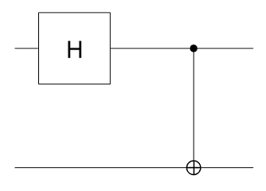
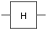

quantumCircuit
Installation Required: This functionality requires MATLAB Support Package for Quantum Computing.
Description
A quantumCircuit object represents a quantum computing circuit
with a specific number of qubits and gates. An example of a quantum circuit with two qubits
and two gates is shown in this diagram.

Each solid horizontal line in the diagram represents a qubit. The symbols  and  represent the gates that operate on the qubits. The symbols
represent the Hadamard gate and the controlled X gate, respectively. For more details about
quantum circuits, see Quantum Circuit.
represent the gates that operate on the qubits. The symbols
represent the Hadamard gate and the controlled X gate, respectively. For more details about
quantum circuits, see Quantum Circuit.
Creation
Syntax
Description
c = quantumCircuit(numQubits)
This syntax sets the NumQubits property to
numQubits.
c = quantumCircuit(gates,numQubits)numQubits must be greater than or equal to the largest qubit
index used in gates.
Input Arguments
Properties
Object Functions
plot | Plot quantum circuit or composite gate |
simulate | Simulate quantum circuit |
run | Run circuit on quantum device |
getMatrix | Matrix representation of quantum circuit or gate |
inv | Inverse of quantum circuit or gate |
generateQASM | Generate QASM code |
unpack | Unpack composite gates in quantum circuit |
observe | Expected value of quantum circuit or state |
Examples
Version History
Introduced in R2023a